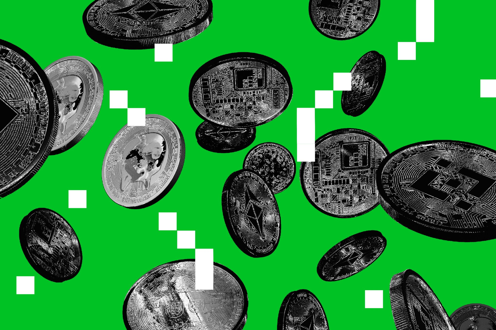

За последние дни появилось всё больше сообщений о кражах у владельцев аппаратных кошельков Ledger: по предварительным оценкам, атакующие вывели более $86 млн с сотен кошельков в Bitcoin, Ethereum и других сетях. 10 октября Ledger подтвердила, что на одном из затронутых устройств обнаружился «несанкционированный аппаратный имплант» — тонкая печатная плата, подложенная под экран.
Судя по фото и видео, которые пользователи выложили в X и Threads, имплант зажат между матрицей и платой устройства и перехватывает всё, что появляется на экране, — включая сид-фразу кошелька, которую генерируют при первой настройке. Дальше встроенный модуль с SIM-картой отправляет украденные данные атакующему, и средства просто сливают с чужих счетов. Важная деталь: серверы Ledger и сами secure element не взломаны — это чистая атака на цепочку поставок.
Проблемные устройства продавал реселлер CryptoBillis, работавший преимущественно в Юго-Восточной Азии. Ledger попросила его приостановить все продажи и отгрузки на время расследования и выложила инструкцию, как проверить кошелёк на следы вскрытия. По данным компании, устройства, купленные напрямую у производителя, не затронуты. Отдельного пресс-релиза на блоге компании на момент публикации нет — подтверждение ограничено официальными заявлениями и инструкцией поддержки.
Кейс — болезненное напоминание всей индустрии «холодного хранения»: криптография бессильна, если устройство можно подменить или вскрыть до покупки. Практические выводы простые: брать hardware wallet только в официальных каналах, осматривать упаковку и экран до активации и генерировать сид-фразу вдали от чужих глаз и рук. Bloomberg оценивает уже перемещённые средства примерно в $70 млн, и оценки пока растут.